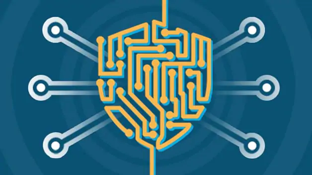

What Is Cybersecurity?
 Cybersecurity is the practice of protecting systems, networks, and programs from digital attacks. These cyberattacks are usually aimed at accessing, changing, or destroying sensitive information; extorting money from users; or interrupting normal business processes.
Implementing effective cybersecurity measures is particularly challenging today because there are more devices than people, and attackers are becoming more innovative.
For more information click on the link below
www.kaspersky.co.in/resource-center/definitions/what-is-cyber-security
Importance of Cyber Security
Cybersecurity is important because it encompasses everything that pertains to protecting our sensitive data, personally identifiable information (PII), protected health information (PHI), personal information, intellectual property, data, and governmental and industry information systems from theft and damage attempted by criminals and adversaries.
Cybersecurity risk is increasing, driven by global connectivity and usage of cloud services, like Amazon Web Services, to store sensitive data and personal information. Widespread poor configuration of cloud services paired with increasingly sophisticated cyber criminals means the risk that your organization suffers from a successful cyber attack or data breach is on the rise.
For more information click on the link below
www.intellectualpoint.com/5-reasons-why-cybersecurity-is-important-now-more-than-ever/
Cyber Threats/Cyber Attacks

You’ve likely heard the term “cyber threat” thrown around in the media. But what exactly are these cyber threats?
A cyber or cybersecurity threat is a malicious act that seeks to damage data, steal data, or disrupt digital life in general. Cyber attacks include threats like computer viruses, data breaches, and Denial of Service (DoS) attacks.
Today, the term is almost exclusively used to describe information security matters.
A cyber attack is an attack that is mounted against us (meaning our digital devices) by means of cyberspace.
Cyber threats are a big deal. Cyber attacks can cause electrical blackouts, failure of military equipment and breaches of national security secrets. They can result in the theft of valuable, sensitive data like medical records. They can disrupt phone and computer networks or paralyze systems, making data unavailable.
For more information click on the link below
www.kaspersky.co.in/resource-center/definitions/what-is-cyber-security